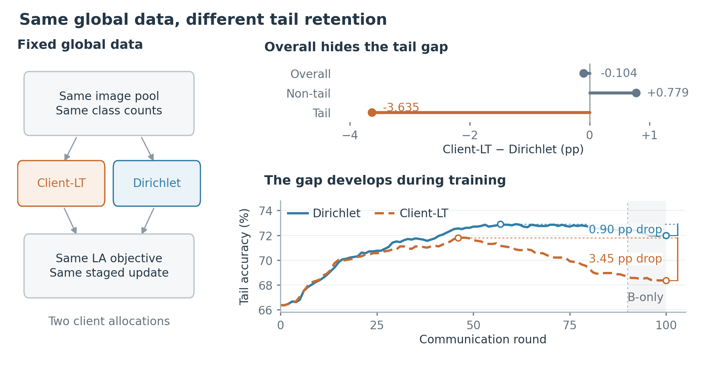
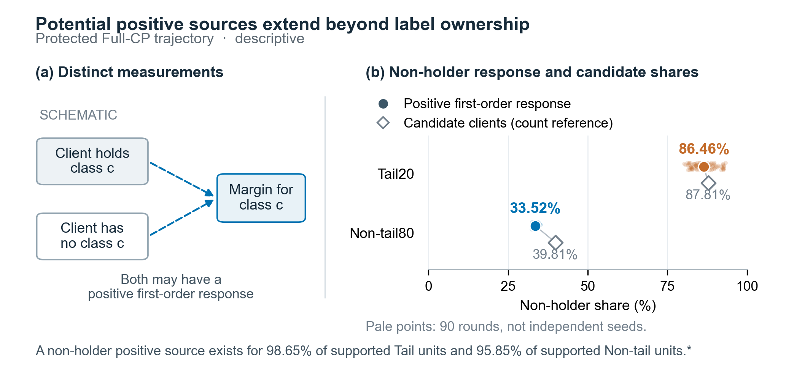
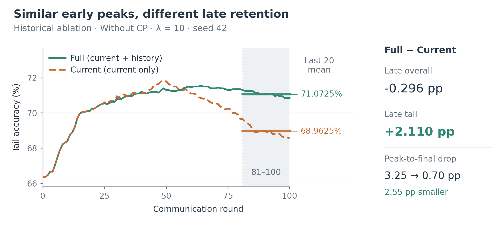

从客户端分布，到功能支持与持续保持
同样数量的类别样本，为什么没有形成同样稳定的尾类能力？新版按“分布 → 来源 → 时间”展开，把来源测量与跨轮维护放在论文的中心。
相同的数据量，可以对应不同的尾类保持
整体精度只差 0.10 个百分点，尾类却差了 3.64 个百分点。
读者先看到什么
同一训练池分给不同客户端，在相同 LA 与更新策略下，整体指标掩盖了尾类的不同经历。
图怎样讲清楚
先用相对 Dirichlet 的增益点图显示谁受益、谁受损，再用完整尾类轨迹区分达到的水平与后续回落。

{kind=link}
证据边界与接下来的问题
两种分配同时改变容量、覆盖与本地类别组合，实际优化步数略有差异；本图不把差值归因于单个来源统计量。峰到最终的回落与末20轮平均准确率分别标注。下一步检查具体功能受到哪些客户端更新的帮助。
标签在哪里，与更新帮助谁，需要分别测量
来源测量应落实到“这次更新对这项功能有什么作用”。
已经测到什么
在当前轨迹中，一阶正向来源并不限于标签持有者。只检查谁有这类图片，会遗漏一部分潜在帮助。
怎样避免误读
正响应份额与候选人数参照并列。非持有者通常更多，较大份额并不意味着单个来源更有效。

{kind=link}
为什么这还不是遗忘风险证明
测量来自训练见证、已受保护的轨迹；两视图响应最小值大于10⁻⁶才计正向来源。响应未乘FedAvg权重，也未直接验证有限更新后的改善。集中度优先级是一项需受控消融检验的优化规则，不能由非持有来源的存在直接推出。
当前改善与跨轮保持，需要分别检验
这一轮能改善什么，与过去已经达到什么水平，是两种不同的维护信息。
已有结果怎样支持设计
旧版同强度实验中，加入历史目标后，尾类末20轮均值提高2.11个百分点，峰后回落由3.25降至0.70个百分点，整体精度下降0.296个百分点。
正文怎样引出方法
先追踪同一功能在普通提案、提交与下一轮更新中的变化，再提出当前改善与持续历史水平的统一目标。

{kind=link}
这张图应该放在哪里
这是方法后的历史目标验证图，不应冒充设计方法之前的独立机理发现，也不能当作新版current-cp结果。正文预分析使用阶段/时间诊断，方法验证再回到保持指标。未经保护轨迹的未来风险预测，仅在主张来源集中度能预测遗忘时需要补充。
这次的结构取舍
| 材料 | 新版位置 |
|---|---|
| 分配差异与尾类下降 | 合并为开篇现象，建立研究问题 |
| 冻结、定期更新与密集更新 | 策略对照；E3保留，防止写成冻结是唯一答案 |
| Full/Flat 与 Full/Current | 来源优先级和历史目标的验证，各自标注版本 |
| μ扫描、梯度余弦 | CP辅助约束的取舍分析 |
| B迁移 | 补充支持的验证；当前小幅单种子收益不承担核心贡献 |
图均为本次设计候选，来自真实数据。完整稿区分观察、诊断、假设和方法验证；没有把“来源集中导致未来遗忘”写成已证实结论。